Research
I develop visual computing and XR methods that enable people to capture real-world environments, transform them into interactive digital representations, and experience them through immersive technologies.
Capture
Acquiring the real world reliably and accessibly.

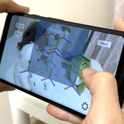
Multi-layer Scene Representation from Composed Focal Stacks
IEEE TVCG (2023), IEEE ISMAR 2023
🏆 Best Journal Paper Award
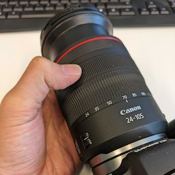
Toward Multi-Plane Image Reconstruction from a Casually Captured Focal Stack
VISAPP 2024
🎖️ Selected High Quality Paper
🏆 SIG-MR Award
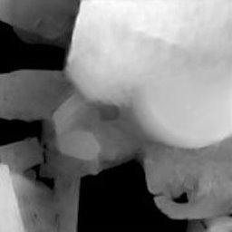
Dense Depth from Event Focal Stack
IEEE/CVF WACV 2025

Occlusion-free 4D Gaussians for Open Surgery Videos Using Multi-Camera Shadowless Lamps
MICCAI 2025
🎖️ Spotlight Presentation
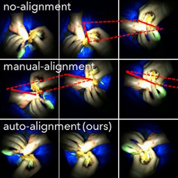
High-Quality Virtual Single-Viewpoint Surgical Video: Geometric Autocalibration of Multiple Cameras in Surgical Lights
MICCAI 2023
Represent
Transforming observations into interactive 3D content.

Think While You Map: Asynchronous Vision-Language Agents for Incremental 3D Scene Graphs
ECCV 2026

Semantic Scene Graphs for Creating a Localization-Ready Internet of Things
IEEE TVCG (2026)

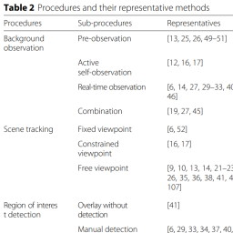
A Survey of Diminished Reality: Techniques for Visually Concealing, Eliminating, and Seeing Through Real Objects
IPSJ CVA (2017)

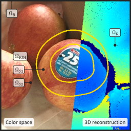
Good Keyframes to Inpaint
IEEE TVCG (2022)
🎤 Invited TVCG Paper at IEEE ISMAR 2022
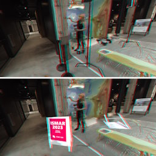
Exemplar-Based Inpainting for 6DOF Virtual Reality Photos
IEEE TVCG (2023), IEEE ISMAR 2023
🏆 Best Journal Paper Award Nominee
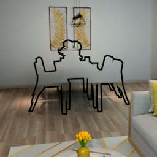
DeepDR: Deep Structure-Aware RGB-D Inpainting for Diminished Reality
3DV 2024
Neural Bokeh: Learning Lens Blur for Computational Videography and Out-of-Focus Mixed Reality
IEEE VR 2024
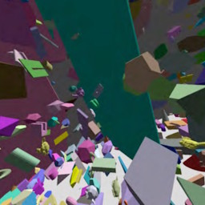
NeuralPVS: Learned Estimation of Potentially Visible Sets
ACM SIGGRAPH Asia 2025

NEF: Neural Error Fields for Follow-up Training with Fewer Rays
VISAPP 2026
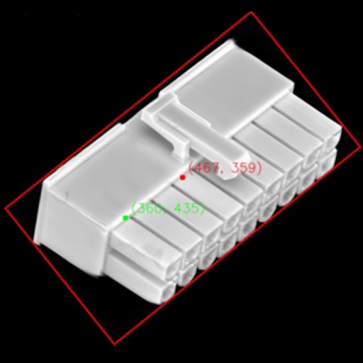
3D Gaussian Reference Parts for Robust Free-Viewpoint Visual Inspection
IEEE Access (2026)
Experience
Connecting immersive content with perception and action.

Tag-Along Virtual Windows Increase Perceived Resistance and Task Load in Augmented Reality
IEEE TVCG (2026), IEEE VR 2026

Perceived Weight of Mediated Reality Sticks
IEEE TVCG (2025)
🎤 Invited TVCG Paper at IEEE VR 2026
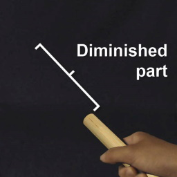
Perceived Weight of a Rod under Augmented and Diminished Reality Visual Effects
ACM VRST 2018
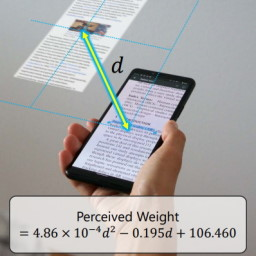
Exploring Pseudo-Weight in Augmented Reality Extended Displays
IEEE VR 2022
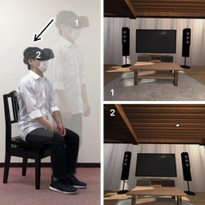
Modified Egocentric Viewpoint for Softer Seated Experience in Virtual Reality
IEEE TVCG (2023), IEEE VR 2023
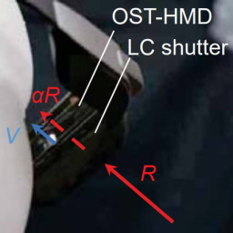
BrightView: Increasing Perceived Brightness of Optical See-Through Head-Mounted Displays Through Unnoticeable Incident Light Reduction
IEEE VR 2018

Not All WIP Are Perceived Equally: Different Speed Expectations in Seated Walk-in-Place Locomotion
ACM VRST 2025
🏆 Design Association of Augmented Experience (DAAX) Good Experience Design Student Award
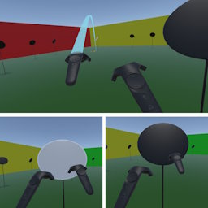
Point & Teleport with Orientation Specification, Revisited: Is Natural Turning Always Superior?
JIP (2023)
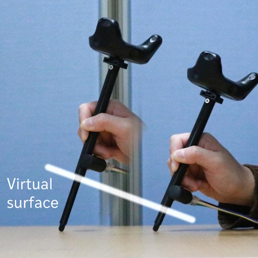
Pen Meets Desk: Above-Surface Drawing with Encountered-Type Haptics Using an Extendable Pen
JIP (2026)
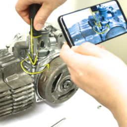
Mixed Reality Light Fields for Interactive Remote Assistance
ACM CHI 2020
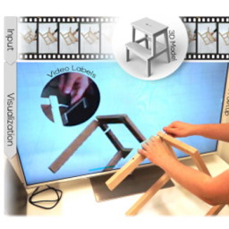
Video-Annotated Augmented Reality Assembly Tutorials
ACM UIST 2020
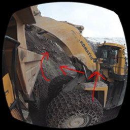
Tools for Teaching Mining Students in Virtual Reality based on 360° Video Experiences
IEEE VR Workshop KELVAR 2020
🏆 Best Paper Award
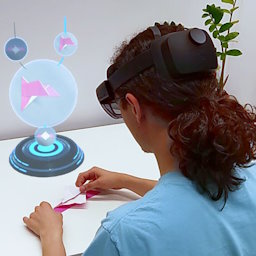
State-Aware Configuration Detection for Augmented Reality Step-by-Step Tutorials
IEEE ISMAR 2023
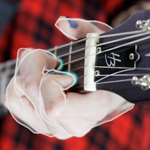
guitARhero: Interactive Augmented Reality Guitar Tutorials
IEEE TVCG (2023), IEEE ISMAR 2023
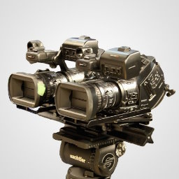
Enabling On-set Stereoscopic MR-based Previsualization for 3D Filmmaking
ACM SIGGRAPH Asia 2011
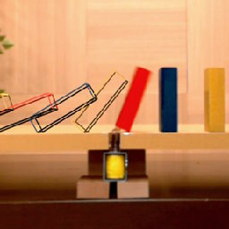
DOMINO (Do Mixed-reality Non-stop) Toppling
IEEE ISMAR 2015
🏆 Best Demo Award

Shohei Mori
Junior Research Group Leader
Visualization Research Center (VISUS)
University of Stuttgart, Germany